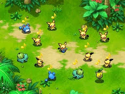
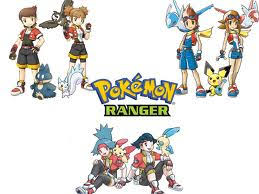

El Futuro de Pokémon Ranger
A día de hoy, muchos seguidores siguen esperando un remake o una nueva entrega de la saga. Las teorías, rumores y deseos de la comunidad mantienen viva la esperanza.


A día de hoy, muchos seguidores siguen esperando un remake o una nueva entrega de la saga. Las teorías, rumores y deseos de la comunidad mantienen viva la esperanza.